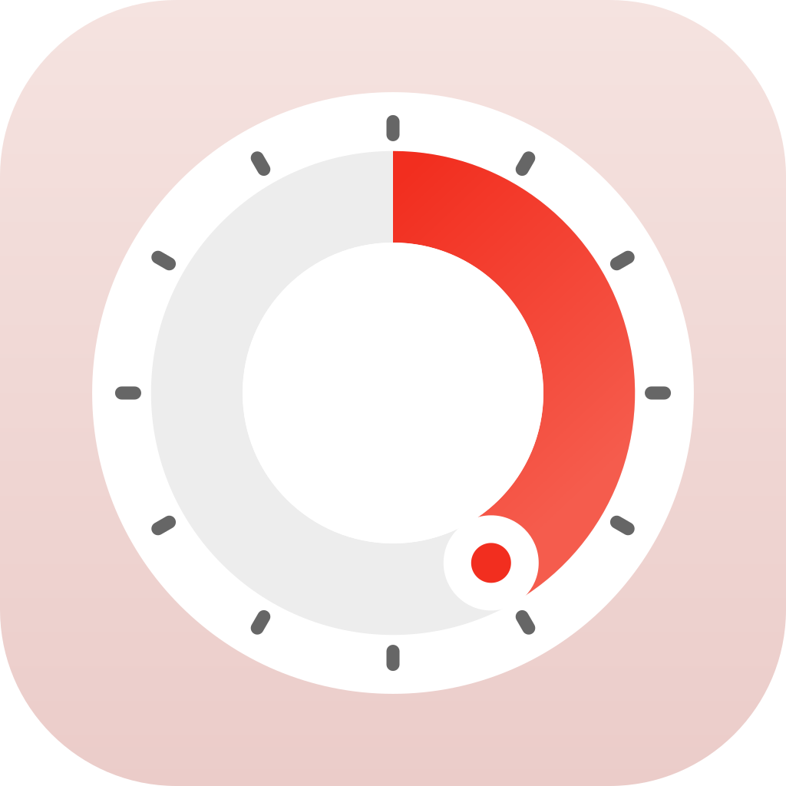

SimplePomodoroPolítica de privacidad
Vigente desde el 8 de octubre de 2026
En resumen
SimplePomodoro no recopila ningún dato sobre ti. No hay cuenta, ni analíticas, ni publicidad, ni rastreo. Lo que haces en la app se queda en tus dispositivos y, si activas la sincronización con iCloud, en tu propia cuenta de iCloud.
Qué guarda la app y dónde
En tu dispositivo
Los ajustes del temporizador, tus categorías, el historial de tus sesiones de enfoque y descansos (para las Estadísticas), tus preferencias de sonido y los sonidos que importes. Los sonidos importados se quedan en el dispositivo donde los importaste.
En tu cuenta de iCloud, solo si activas la sincronización
Con SimplePomodoro Premium y Sincronizar con iCloud activado, el temporizador en curso, su categoría y las duraciones se guardan en el almacenamiento clave-valor de iCloud, y tu historial de sesiones y tus categorías en tu base de datos privada de iCloud (CloudKit). Apple guarda estos datos en tu cuenta de iCloud según la Política de privacidad de Apple. El desarrollador no tiene acceso a ellos. Puedes desactivar la sincronización en cualquier momento en Menú y borrar los datos de iCloud de la app en los ajustes de iCloud de tu dispositivo.
Compras
Apple gestiona las suscripciones a través del App Store. La app comprueba el estado de tu suscripción en tu dispositivo y nunca ve tus datos de pago.
Notificaciones y Actividades en vivo
Las alertas de fin de fase y las Actividades en vivo se crean en tu dispositivo. No pasan por ningún servidor nuestro.
Terceros
La app no contiene código de terceros, analíticas, publicidad ni rastreo. No comparte ni vende datos, porque no recopila ninguno.
Menores
SimplePomodoro es apta para todo público y no recopila información personal de nadie, tampoco de menores.
Cambios
Si esta política cambia, la nueva versión se publicará en esta página con una nueva fecha de vigencia.
Contacto
SimplePomodoro está hecha por Jesus Molina. Para preguntas sobre privacidad, escribe a colgat3666@proton.me.